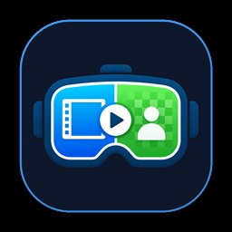
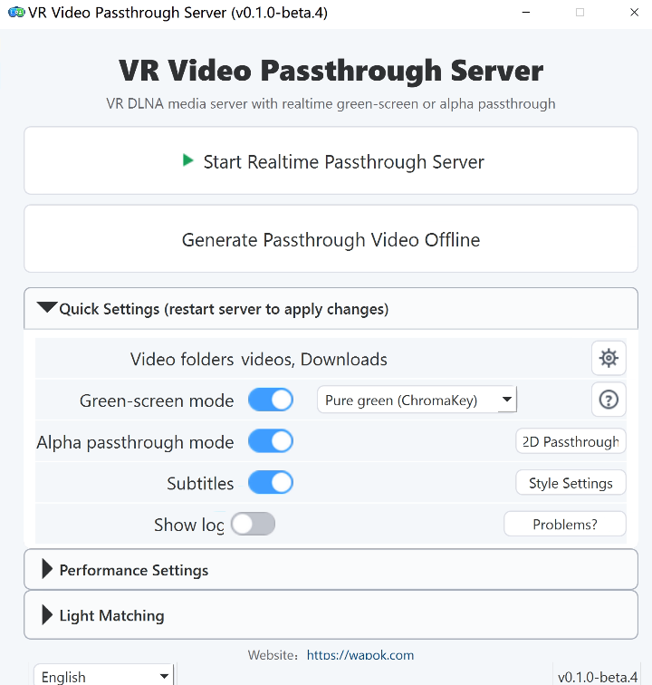
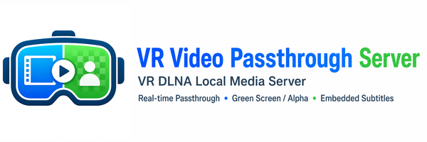
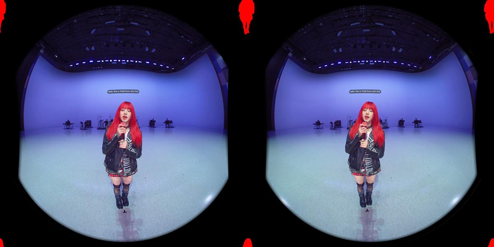
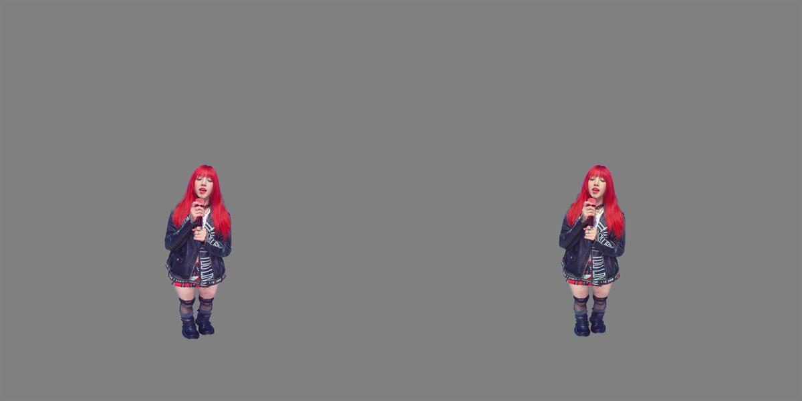

Automatic VR player discovery
Expose local video folders through DLNA/UPnP for common VR players such as Skybox, Moon Player, 4XVR, DeoVR, and HereSphere.
A mixed reality video tool for VR180 and local media libraries
Run a local DLNA media server on Windows, stream videos to Quest and other VR players, and generate green-screen or Alpha passthrough output in realtime.



No need to rebuild your video library
Your PC handles the video processing. Your VR player discovers and plays the library over your home network.
Expose local video folders through DLNA/UPnP for common VR players such as Skybox, Moon Player, 4XVR, DeoVR, and HereSphere.
Use GPU matting and HEVC encoding to convert normal VR video into green-screen or Alpha passthrough streams.
Keep subtitles visible in passthrough playback, with desktop preview and style controls.
Pre-generate passthrough videos when you want saved output or less realtime load while watching.
Start the server, select folders, switch output modes, and manage settings from a Chinese, English, or Japanese desktop UI.
Adjust video to match ambient light, with three presets and full custom control so content blends more naturally into the real environment.
Convert flat 2D videos into stereo 3D output for VR playback, with DA3 depth estimation and GPU rendering for live and offline workflows.
Add same-stem interpretation audio as a .si.wav sidecar and play a mixed [SI] virtual MP4 entry from DLNA.
Generated and virtual titles automatically use VR-friendly naming patterns so common players recognize stereo, fisheye, alpha, and live entries correctly.
Output examples
Alpha works best with players that support transparency. Green-screen output works with ChromaKey playback.


Requirements
Player compatibility
Support varies by player and playback mode. Choose Alpha when your player supports it, or use ChromaKey green-screen mode as the broader fallback.
| Player | Alpha passthrough | Gray green screen | ChromaKey green screen |
|---|---|---|---|
| Skybox VR Player 2.0.2 Preview | ✓ | - | ✓ |
| Moon Player | - | ✓ | ✓ |
| 4XVR Video Player | ✓ | - | ✓ |
| DeoVR Player | ✓ | - | ✓ |
| HereSphere VR Video Player | ✓ | - | ✓ |
Get started
Run it on your Windows PC, choose your local video folders, then find the server from your VR player through DLNA.